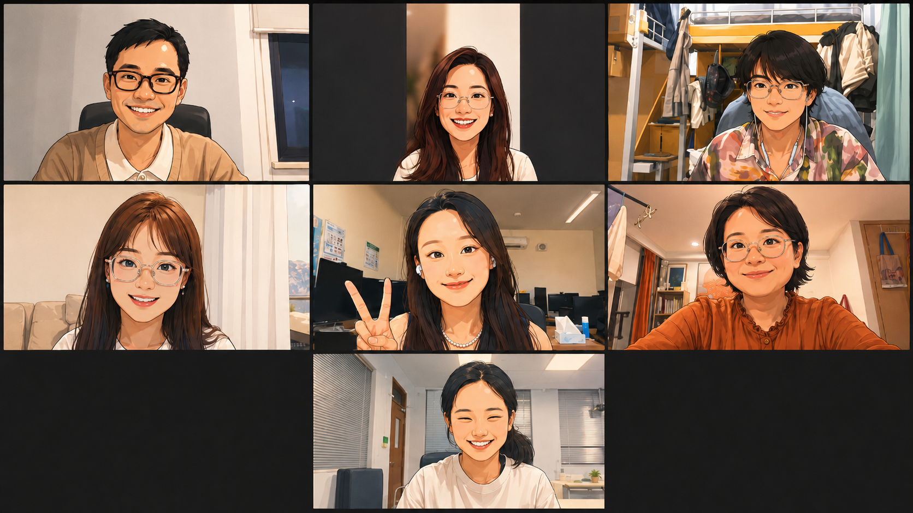

How do biomolecules arrange themselves in space — and how does that arrangement decide what a cell becomes?
We develop and combine multiscale, multimodal tools to watch molecules organize inside and outside the cell — from a whole nucleus down to a single nucleosome — and ask how that organization runs the genome.


What we study
All research →


“Organization is one of life's instructions. We're building the tools to read it — from a whole nucleus down to a single nucleosome.”
Latest news
Join us
PhD students, rotation students, research assistants, postdocs — and summer interns. No single background required.
One question, many lenses.
Life is organized across scales — from a whole nucleus down to a single nucleosome. We develop and combine cryo-electron tomography, artificial intelligence, biochemical reconstitution and cellular experiments to watch biomolecules organize inside and outside the cell, and to ask how that organization runs the genome and shapes what a cell becomes.
Our toolkit
Selected publications
A full, continuously updated list is available on ORCID.
ORCID · 0000-0002-7788-0806 ↗A young, curious team
Across physics, chemistry, biology & code. We come from different backgrounds and learn from each other every day — we care about good questions, careful experiments, and a lab where people grow and have fun doing hard science together.
Huabin Zhou, Ph.D.
Huabin develops and combines multiscale, multimodal approaches — cryo-electron tomography, artificial intelligence, biochemical reconstitution and cellular experiments — to understand how biomolecules organize in space, and how that organization regulates the life of the cell. [ full bio to be added ]
Lab members


We're recruiting PhD & rotation students, research assistants, postdocs — and summer interns.
See how to join →Lab news & updates

Join us — this summer, and beyond.
We're recruiting PhD students, rotation students, research assistants and postdocs, and we love hosting summer interns. No single background required — physics, biology, chemistry and CS are all welcome. Bring curiosity and persistence; we'll figure out the rest together.
Ready to reach out?
Email Huabin directly with your CV and a few sentences about what excites you.